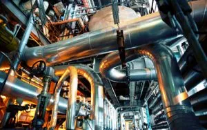
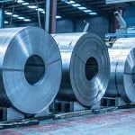
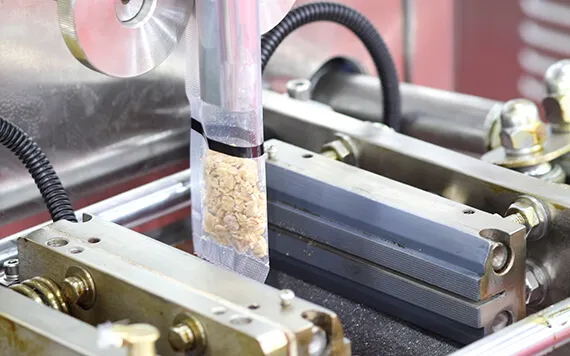
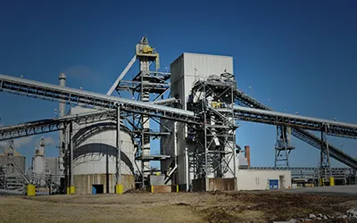
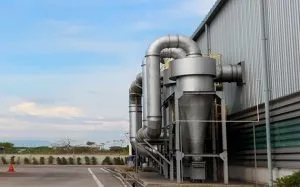
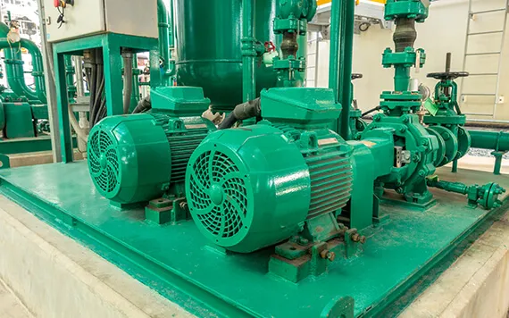

Saw Pipe Plant

Machine & Plant Automation
Machine builders and plant manufacturers each have specific automation requirements — from axis-precise servo control in steel rolling to sequence-based VFD operation in packaging lines. ACS works from control philosophy to commissioning across eight industry segments.
Industry today demands faster time-to-market, higher machine efficiency, and consistent product quality — all at the same time. Achieving this calls for control systems that are precise, adaptable, and field-proven across demanding environments.
ACS delivers PLC, VFD, and Servo-based motion control solutions built on Siemens S7-1200/1500 and G120/V90/S120 drives — programmed in TIA Portal and communicating over Profinet, Profibus, Modbus, and USS field bus protocols.
Industry Segments
Saw pipe manufacturing involves multi-stage forming and welding sequences where precise speed synchronisation and position control across each machine section is critical. ACS provides Siemens PLC and VFD-based drive systems for the full pipe production line.
Applications Covered
Steel and aluminum processing lines demand high-speed, high-torque drive coordination across multiple stands. ACS has delivered complex rolling mill automation including AGC (Automatic Gauge Control), tension leveling, and centralized monitoring systems.
Applications Covered
Packaging lines run at high speed with precise fill volumes and seal timing. ACS builds Siemens PLC-based control panels for packaging machinery, integrating servo-driven film feed, auger-based dosing, and cup-fill station control with HMI recipe management.
Applications Covered
Material handling automation covers warehouse pick systems, multi-axis robots, and bulk conveying networks. ACS integrates PLC-based sequencing with robot interfaces, pneumatic conveying control, and batch plant automation for bulk ingredient management.
Applications Covered
Dust collection and pneumatic conveying systems require VFD-controlled blower sequences, differential pressure monitoring, and automatic damper control. ACS builds PLC panels for these systems integrating pressure and airflow sensors with Siemens G120 drive control.
Applications Covered
Rubber and plastic processing equipment demands precise temperature-speed coordination between extruder screws, calendering rolls, and hydraulic press cycles. ACS designs PLC and drive panels for these machines — from dispersion kneaders to full extrusion line control.
Applications Covered
Common industrial applications like pump, fan, and conveyor control form the backbone of most plants. ACS supplies DOL, Star-Delta, and VFD-based panels for these applications across all segments — from standalone units to centralized motor control centres.
Applications Covered
Textile machinery requires precise tension control across winder and unwinder stations, with coordinated speed regulation through fabric coating application zones. ACS designs Siemens servo and VFD-based drive systems for these winding and coating applications.
Applications Covered
Talk to ACS Engitech about PLC panels, SCADA systems, process automation, machine automation, data logging, or Siemens automation support.